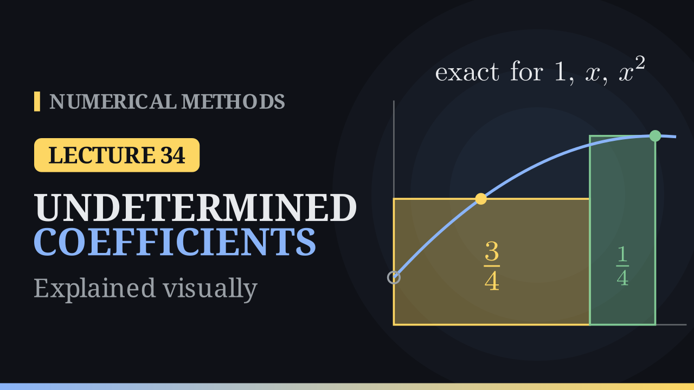

Lecture 34
Method of Undetermined Coefficients¶

Key results¶
- The method: write the rule as \(\int_a^b f(x)\,dx\approx\sum_{i=0}^n\lambda_if(x_i)\) and demand exactness for \(1,x,\dots,x^n\): \(\sum_i\lambda_ix_i^k=\frac{b^{k+1}-a^{k+1}}{k+1}\). The matrix is the transposed Vandermonde matrix, so for distinct nodes the weights are unique.
- Degree of precision \(p\): exact for every polynomial of degree \(\le p\), not for some polynomial of degree \(p+1\).
- Error constant: \(C=\int_a^b x^{p+1}\,dx-\sum_i\lambda_ix_i^{p+1}\) and \(E(f)=\frac{C}{(p+1)!}f^{(p+1)}(\eta)\).
- Classics recovered: trapezoid (\(C=-\frac{h^3}{6}\), \(E=-\frac{h^3}{12}f''\)), Simpson \(1/3\) (\(E=-\frac{h^5}{90}f^{(4)}\)), Simpson \(3/8\) (\(C=-\frac{9h^5}{10}\), \(E=-\frac{3h^5}{80}f^{(4)}\)).
- New nodes: \(\int_0^hf\,dx\approx\frac{3h}{4}f\big(\frac h3\big)+\frac h4f(h)\), precision \(2\), \(E=-\frac{h^4}{216}f'''(\eta)\). On \(\int_0^1e^x\,dx\) it gives \(1.726280\) (error \(-8.0\times10^{-3}\)).
Why another road?¶
The trapezoidal rule \(\frac h2(1,1)\), Simpson's \(1/3\) rule \(\frac h3(1,4,1)\) and the \(3/8\) rule \(\frac{3h}{8}(1,3,3,1)\) all use fixed, equally spaced nodes, and each weight came from integrating a Lagrange basis polynomial, \(\lambda_i=\int_a^b\ell_i(x)\,dx\). The method of undetermined coefficients gets the same weights, and the error, from a small linear system.
The idea¶
Write the rule as a weighted sum
with the nodes given and the weights unknown. Feed it \(f=1,x,x^2,\dots\): each exact integral gives one linear equation for the weights. Since the integral and the rule are both linear, a rule that is exact for \(1,x,\dots,x^d\) is exact for every polynomial of degree \(\le d\).
With \(n+1\) weights we impose \(n+1\) conditions; row \(k\) reads
The matrix is the transpose of the Vandermonde matrix from interpolation; for distinct nodes it is invertible, and the weights exist and are unique.
Degree of precision. A rule has degree of precision \(p\) if it integrates every polynomial of degree at most \(p\) exactly, but fails for at least one polynomial of degree \(p+1\). For Simpson's rule on \([-1,1]\), \(\frac13\big(f(-1)+4f(0)+f(1)\big)\), the monomials \(1,x,x^2,x^3\) give \(2,0,\frac23,0\), as the integrals do, but \(x^4\) gives \(\frac23\) instead of \(\frac25\): \(p=3\).
The error constant¶
If \(x^{p+1}\) is the first monomial that fails, the gap
is the error constant. In the Taylor expansion of \(f\) the part of degree \(\le p\) is integrated exactly, and the next term \(\frac{f^{(p+1)}}{(p+1)!}x^{p+1}\) is integrated with error \(C\). This gives
The classical rules¶
Trapezoid. Exactness does not change under a shift, so take \([0,h]\) with nodes \(0,h\). \(f=1\): \(\lambda_0+\lambda_1=h\); \(f=x\): \(\lambda_1h=\frac{h^2}{2}\). So \(\lambda_0=\lambda_1=\frac h2\). For \(x^2\): \(\frac{h^3}{3}\) against \(\frac h2h^2=\frac{h^3}{2}\), so \(C=-\frac{h^3}{6}\), \(p=1\) and \(E=-\frac{h^3}{12}f''(\eta)\).
Simpson's 1/3 rule. With \(x_0,\ x_1=x_0+h,\ x_2=x_0+2h\) the three conditions reduce to
so \(\lambda_2=\frac h3\), \(\lambda_1=\frac{4h}{3}\), \(\lambda_0=\frac h3\). On \([-h,h]\) the rule integrates the parabola through the three points of \(x^3\), which is the line \(h^2x\); the gap \(x^3-h^2x\) is odd and its areas cancel, so \(x^3\) is exact too. For \(x^4\): \(\frac{2h^5}{5}\) against \(\frac{2h^5}{3}\), \(C=-\frac{4h^5}{15}\), \(p=3\) and \(E=-\frac{h^5}{90}f^{(4)}(\xi)\).
Simpson's 3/8 rule. On \([0,3]\) with \(h=1\):
with solution \(\frac38,\frac98,\frac98,\frac38=\frac38(1,3,3,1)\). For \(x^4\): \(\frac{243}{5}-\frac{99}{2}=-\frac{9}{10}\), so \(E=-\frac{9}{10\cdot4!}h^5f^{(4)}=-\frac{3h^5}{80}f^{(4)}(\xi)\).
A rule on unusual nodes¶
Choose \(w_0,w_1,w_2\) in
for the highest possible degree. Exactness for \(1,x,x^2\) gives
Subtracting the last two, \(\frac29w_1=\frac16\), so \(w_1=\frac34\), \(w_2=\frac14\) and \(w_0=0\): the value \(f(0)\) is not needed at all,
Geometrically, the rule is the area of two rectangles of widths \(\frac{3h}{4}\) and \(\frac h4\), and for every parabola it equals the area under the curve. For \(x^3\): \(\frac{h^4}{4}\) against \(\frac{h^4}{36}+\frac{h^4}{4}\), so \(C=-\frac{h^4}{36}\), \(p=2\) and
Worked example¶
For \(\int_0^1e^x\,dx=e-1\approx1.718282\) with \(h=1\):
| term | value |
|---|---|
| \(\frac34e^{1/3}\) | 1.046709 |
| \(\frac14e\) | 0.679570 |
| rule | 1.726280 |
The error is \(-8.0\times10^{-3}\). The formula predicts \(-\frac{e^\eta}{216}\), between \(-\frac{e}{216}\approx-0.0126\) and \(-\frac1{216}\approx-0.0046\); the actual error corresponds to \(\eta\approx0.55\).
On \(\int_0^1\frac{dx}{1+x^2}=\frac\pi4\) the rule uses \(f(\frac13)=0.9\) and \(f(1)=0.5\) and gives \(0.8\) (error \(-1.5\times10^{-2}\)); the trapezoidal rule, with two values as well, gives \(0.75\) (error \(3.5\times10^{-2}\)).
Composite rule. On \(n\) pieces of width \(h\) the errors add up to \(-\frac{(b-a)h^3}{216}f'''(\mu)=O(h^3)\). For \(\int_0^1e^x\,dx\):
| \(n\) | 1 | 2 | 4 | 8 | 16 |
|---|---|---|---|---|---|
| \(I-R_n\) | \(-8.00\times10^{-3}\) | \(-1.00\times10^{-3}\) | \(-1.25\times10^{-4}\) | \(-1.56\times10^{-5}\) | \(-1.95\times10^{-6}\) |
| ratio | 7.97 | 8.02 | 8.02 | 8.01 |
Weak cases¶
- Negative weights. On \(n+1\) equally spaced nodes in \([0,1]\) (closed Newton–Cotes), all weights are positive up to \(n=7\); for \(n=8\) the smallest weight is \(-0.16\), and for \(n=10\) the weights range from \(-0.44\) to \(0.71\).
- Noise amplification. An error \(\varepsilon\) in the values of \(f\) can change the result by up to \(\varepsilon\sum_i|\lambda_i|\). This sum is \(1\) (the interval length) up to \(n=7\), but \(1.45\) for \(n=8\), \(3.1\) for \(n=10\), \(7.5\) for \(n=12\) and \(544\) for \(n=20\).
- Ill-conditioning. The condition number of the Vandermonde matrix grows from about \(15\) (\(n=2\)) to \(1.2\times10^{8}\) (\(n=10\)) and \(8.6\times10^{16}\) (\(n=20\)), beyond double precision. As with Runge's example, high degree on equally spaced nodes is a bad idea.
- With \(k\) unknowns one can impose at most \(k\) conditions, and the error formula needs \(f^{(p+1)}\) to exist and be bounded.
Algorithm¶
- Choose the nodes, shifted to a convenient interval such as \([0,h]\) or \([-h,h]\).
- Write one equation per monomial: \(\sum_i\lambda_ix_i^k=\int_a^bx^k\,dx\), \(k=0,\dots,n\).
- Solve the linear system for the weights.
- Test \(x^{n+1},x^{n+2},\dots\) until a monomial fails: one less than its degree is \(p\), the gap is \(C\), and \(E(f)=\frac{C}{(p+1)!}f^{(p+1)}(\eta)\).
Two roads to the same rule¶
| Lagrange route | undetermined coefficients | |
|---|---|---|
| weights | \(\lambda_i=\int_a^b\ell_i(x)\,dx\), one at a time | one linear system |
| error | separate argument | from the next monomial |
| nodes | any distinct nodes | any distinct nodes |
| unknown nodes | no | yes |
Both give the same unique weights. Next lecture: Gauss–Legendre quadrature, where the nodes are unknowns too; the two nodes \(\pm\frac1{\sqrt3}\) give \(\int_{-1}^1f\,dx\approx f\big(-\frac1{\sqrt3}\big)+f\big(\frac1{\sqrt3}\big)\), exact for every cubic.